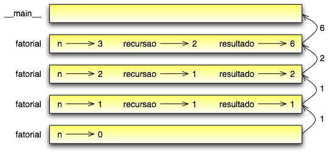

Tópicos
Algumas das funções nativas do Python que temos usado, como as funções matemáticas, produziram resultados. Chamar a função gerou um novo valor, o qual geralmente atribuímos à uma variável ou usamos como parte de uma expressão:
e = math.exp(1.0)
altura = raio * math.sin(angulo)
Mas até agora, nenhuma das funções que nós escrevemos retornou um valor.
Neste capítulo, iremos escrever funções que retornam valores, as quais chamaremos de funções frutíferas, ou funções que dão frutos, na falta de um nome melhor. O primeiro exemplo é area, que retorna a área de um círculo dado o seu raio:
import math
def area(raio):
temp = math.pi * raio**2
return temp
Já vimos a instrução return antes, mas em uma função frutífera a instrução return inclui um valor de retorno. Esta instrução significa: “Retorne imediatamente desta função e use a expressão em seguida como um valor de retorno”. A expressão fornecida pode ser arbitrariamente complicada, de modo que poderíamos ter escrito esta função de maneira mais concisa:
def area(raio):
return math.pi * raio**2
Por outro lado, variáveis temporárias como temp muitas vezes tornam a depuração mais fácil.
Às vezes é útil ter múltiplos comandos return, um em cada ramo de uma condicional:
def valorAbsoluto(x):
if x < 0:
return -x
else:
return x
Já que estes comandos return estão em ramos alternativos da condicional, apenas um será executado. Tão logo um seja executado, a função termina sem executar qualquer instrução ou comando subsequente.
O código que aparece depois de uma instrução return, ou em qualquer outro lugar que o fluxo de execução jamais alcance, é chamado código morto (dead code).
Em uma função frutífera, é uma boa ideia assegurar que todo caminho possível dentro do programa encontre uma instrução return. Por exemplo:
def valorAbsoluto(x):
if x < 0:
return -x
elif x > 0:
return x
Este programa não está correto porque se x for 0, nenhuma das condições será verdadeira, e a função terminará sem encontrar um comando return. Neste caso, o valor de retorno será um valor especial chamado None:
>>> print valorAbsoluto(0)
None
Como exercício, escreva uma função compare que retorne 1 se x > y, 0 se x == y e -1 se x < y.
Neste ponto, você deve estar apto a olhar para funções completas e dizer o que elas fazem. Também, se você vem fazendo os exercícios, você escreveu algumas pequenas funções. Conforme escrever funções maiores, você pode começar a ter mais dificuldade, especialmente com erros em tempo de execução (erros de runtime) ou erros semânticos.
Para lidar com programas de crescente complexidade, vamos sugerir uma técnica chamada desenvolvimento incremental. A meta do desenvolvimento incremental é evitar seções de depuração (debugging) muito longas pela adição e teste de somente uma pequena quantidade de código de cada vez.
Como exemplo, suponha que você queira encontrar a distância entre dois pontos, dados pelas coordenadas (x1,y1) e (x2,y2). Pelo teorema de Pitágoras, a distância é:
distancia = V (x2 - x1)2 + (y2 - y1)2 (5.1)
XXX: falta o sinal de raiz e elevar os expoentes desta fórmula
O primeiro passo é considerar como deveria ser uma função distancia em Python. Em outras palavras, quais são as entradas (parâmetros) e qual é a saída (valor de retorno)?
Neste caso, os dois pontos são as entradas, os quais podemos representar usando quatro parâmetros. O valor de retorno é a distância, que é um valor em ponto flutuante.
Já podemos escrever um esboço da função:
def distancia(x1, y1, x2, y2):
return 0.0
Obviamente, esta versão da função não calcula distâncias; ela sempre retorna zero. Mas ela está sintaticamente correta, e vai rodar, o que significa que podemos testá-la antes de torná-la mais complicada.
Para testar a nova função, vamos chamá-la com valores hipotéticos:
>>> distancia(1, 2, 4, 6)
0.0
Escolhemos estes valores de modo que a distância horizontal seja igual a 3 e a distância vertical seja igual a 4; deste modo, o resultado é 5 (a hipotenusa de um triângulo 3-4-5). Quando testamos uma função, é útil sabermos qual o resultado correto.
Neste ponto, já confirmamos que a função está sintaticamente correta, e podemos começar a adicionar linhas de código. Depois de cada mudança adicionada, testamos a função de novo. Se um erro ocorre em qualquer ponto, sabemos aonde ele deve estar: nas linhas adicionadas mais recentemente.
Um primeiro passo lógico nesta operação é encontrar as diferenças x2 - x1 e y2 - y1. Nós iremos guardar estes valores em variáveis temporárias chamadas dx e dy e imprimi-las:
def distancia(x1, y1, x2, y2):
dx = x2 - x1
dy = y2 - y1
print "dx vale", dx
print "dy vale", dy
return 0.0
Se a função estiver funcionando, as saídas deverão ser 3 e 4. Se é assim, sabemos que a função está recebendo os parâmetros corretos e realizando o primeiro cálculo corretamente. Se não, existem poucas linhas para checar.
Em seguida, calcularemos a soma dos quadrados de dx e dy:
def distancia(x1, y1, x2, y2):
dx = x2 - x1
dy = y2 - y1
dquadrado = dx**2 + dy**2
print "dquadrado vale: ", dquadrado
return 0.0
Note que removemos os comandos print que havíamos escrito no passo anterior. Código como este ajuda a escrever o programa, mas não é parte do produto final (em inglês é usado o termo scaffolding).
De novo, nós vamos rodar o programa neste estágio e checar a saída (que deveria ser 25).
Finalmente, se nós tínhamos importado o módulo matemático math, podemos usar a função sqrt para computar e retornar o resultado:
def distancia(x1, x2, y1, y2):
dx = x2 - x1
dy = y2 - y1
dquadrado = dx**2 + dy**2
resultado = math.sqrt(dquadrado)
return resultado
Se isto funcionar corretamente, você conseguiu. Caso contrário, talvez fosse preciso imprimir (exibir) o valor de resultado antes da instrução return.
Enquanto for iniciante, você deve acrescentar apenas uma ou duas linhas de código de cada vez. Conforme ganhar mais experiência, você se verá escrevendo e depurando pedaços maiores. De qualquer modo, o processo de desenvolvimento incremental pode poupar um bocado de tempo de depuração.
Os aspectos chave do processo são:
Como um exercício, use o desenvolvimento incremental para escrever uma função chamada hipotenusa que retorna a medida da hipotenusa de um triângulo retângulo dadas as medidas dos dois catetos como parâmetros. Registre cada estágio do desenvolvimento incremental conforme você avance.
Conforme você poderia esperar agora, você pode chamar uma função de dentro de outra. Esta habilidade é chamada de composição.
Como um exemplo, vamos escrever uma função que recebe dois pontos, o centro de um círculo e um ponto em seu perímetro, e calcula a área do círculo.
Assuma que o ponto do centro está guardado nas variáveis xc e yc, e que o ponto do perímetro está nas variáveis xp e yp. O primeiro passo é encontrar o raio do círculo, o qual é a entre os dois pontos. Felizmente, temos uma função, distancia, que faz isto:
Raio = distancia(xc, yc, xp, yp)
O segundo passo é encontrar a área de um círculo com o raio dado e retorná-la:
resultado = area(raio)
return resultado
Juntando tudo numa função, temos:
def area2(xc, yc, xp, yp):
raio = distancia(xc, yc, xp, yp)
resultado = area(raio)
return resultado
Chamamos à esta função de area2 para distinguir da função area, definida anteriormente. Só pode existir uma única função com um determinado nome em um determinado módulo.
As variáveis temporárias raio e resultado são úteis para o desenvolvimento e para depuração (debugging), mas uma vez que o programa esteja funcionando, podemos torná-lo mais conciso através da composição das chamadas de função:
def area2(xc, yc, xp, yp):
return area(distancia(xc, yc, xp, yp))
Como exercício, escreva uma função ``coeficienteAngular(x1, y1, x2, y2)`` que retorne a coeficiente angular de uma linha dados os pontos (x1, y1) e (x2, y2). Depois use esta função em uma função chamada ``cortaY(x1, y1, x2, y2)`` que retorne a interseção da linha com o eixo y, dados os pontos (x1, y1) e (x2, y2).
Funções podem retornar valores booleanos, o que muitas vezes é conveniente por ocultar testes complicados dentro de funções. Por exemplo:
def ehDivisivel(x, y):
If x % y == 0:
return True # é verdadeiro (True), é divisível
else:
return False # é falso (False), não é divisível
O nome desta função é ehDivisivel (“é divisível”). É comum dar a uma função booleana nomes que soem como perguntas sim/não. ehDivisivel retorna ou True ou False para indicar se x é ou não é divisível por y.
Podemos tornar a função mais concisa se tirarmos vantagem do fato de a condição da instrução if ser ela mesma uma expressão booleana. Podemos retorná-la diretamente, evitando totalmente o if:
def ehDivisivel(x, y):
return x % y == 0
Esta sessão mostra a nova função em ação:
>>> ehDivisivel(6, 4)
False
>>> ehDivisivel(6, 3)
True
Funções booleanas são frequentemente usadas em comandos condicionais:
if ehDivisivel(x, y):
print "x é divisível por y"
else:
print "x não é divisível por y"
Mas a comparação extra é desnecessária.
Como exercício, escreva uma função estaEntre(x, y, z) que retorne True se y < x < z ou False, se não.
Até aqui, você aprendeu apenas um pequeno subconjunto da linguagem Python, mas pode ser que te interesse saber que este pequeno subconjunto é uma linguagem de programação completa, o que significa que qualquer coisa que possa ser traduzida em operação computacional pode ser expressa nesta linguagem. Qualquer programa já escrito pode ser reescrito usando somente os aspectos da linguagem que você aprendeu até agora (usualmente, você precisaria de uns poucos comandos para controlar dispositivos como o teclado, mouse, discos, etc., mas isto é tudo).
Provar esta afirmação é um exercício nada trivial, que foi alcançado pela primeira vez por Alan Turing, um dos primeiros cientistas da computação (alguém poderia dizer que ele foi um matemático, mas muitos dos primeiros cientistas da computação começaram como matemáticos). Por isso, ficou conhecido como Tese de Turing. Se você fizer um curso em Teoria da Computação, você terá chance de ver a prova.
Para te dar uma ideia do que você pode fazer com as ferramentas que aprendeu a usar até agora, vamos avaliar algumas funções matemáticas recursivamente definidas. Uma definição recursiva é similar à uma definição circular, no sentido de que a definição faz referência à coisa que está sendo definida. Uma verdadeira definição circular não é muito útil:
vorpal: adjetivo usado para descrever algo que é vorpal.
Se você visse esta definição em um dicionário, ficaria confuso. Por outro lado, se você procurasse pela definição da função matemática fatorial, você encontraria algo assim:
0! = 1
n! = n.(n-1)!
Esta definição diz que o fatorial de 0 é 1, e que o fatorial de qualquer outro valor, n, é n multiplicado pelo fatorial de n-1.
Assim, 3! (lê-se “3 fatorial” ou “fatorial de 3”) é 3 vezes 2!, o qual é 2 vezes 1!, o qual é 1 vezes 0!. Colocando tudo isso junto, 3! igual 3 vezes 2 vezes 1 vezes 1, o que é 6.
Se você pode escrever uma definição recursiva de alguma coisa, você geralmente pode escrever um programa em Python para executá-la. O primeiro passo é decidir quais são os parâmetros para esta função. Com pouco esforço, você deverá concluir que fatorial recebe um único parâmetro:
def fatorial(n):
Se acontece de o argumento ser 0, tudo o que temos de fazer é retornar 1:
def fatorial(n):
if n == 0:
return 1
Por outro lado, e esta é a parte interessante, temos que fazer uma chamada recursiva para encontrar o fatorial de n-1 e então multiplicá-lo por n:
def fatorial(n):
if n == 0:
return 1
else:
recursivo = fatorial(n-1)
resultado = n * recursivo
return resultado
O fluxo de execução para este programa é similar ao fluxo de contagemRegressiva na Seção 4.9. Se chamarmos fatorial com o valor 3:
Já que 3 não é 0, tomamos o segundo ramo e calculamos o fatorial de n-1 ...
Já que 2 não é 0, tomamos o segundo ramo e calculamos o fatorial de n-1 ...
Já que 1 não é 0, tomamos o segundo ramo e calculamos o fatorial de n-1 ...
Já que 0 é 0, tomamos o primeiro ramo e retornamos 1 sem fazer mais qualquer chamada recursiva.
O valor retornado (1) é multiplicado por n, que é 1, e o resultado é retornado.
O valor retornado (1) é multiplicado por n, que é 2, e o resultado é retornado.
O valor retornado (2) é multiplicado por n, que é 1, e o resultado, 6, se torna o valor de retorno da chamada de função que iniciou todo o processo.
Eis o diagrama de pilha para esta sequência de chamadas de função:
Os valores de retorno são mostrados sendo passados de volta para cima da pilha. Em cada quadro, o valor de retorno é o valor de resultado, o qual é o produto de n por recursivo.
Seguir o fluxo de execução é uma maneira de ler programas, mas que pode rapidamente se transformar em um labirinto. Uma alternativa é o que chamamos de “voto de confiança”. Quando você tem uma chamada de função, em vez de seguir o fluxo de execução, você assume que a função funciona corretamente e retorna o valor apropriado.
De fato, você está agora mesmo praticando este voto de confiança ao usar as funções nativas. Quando você chama math.cos ou math.exp, você não examina a implementação destas funções. Você apenas assume que elas funcionam porque as pessoas que escreveram as bibliotecas nativas eram bons programadores.
O mesmo também é verdade quando você chama uma de suas próprias funções. Por exemplo, na Seção 5.4, escrevemos a função chamada ehDivisivel que determina se um número é divisível por outro. Uma vez que nos convencemos que esta função está correta – ao testar e examinar o código – podemos usar a função sem examinar o código novamente.
O mesmo também é verdadeiro para programas recursivos. Quando você tem uma chamada recursiva, em vez de seguir o fluxo de execução, você poderia assumir que a chamada recursiva funciona (produz o resultado correto) e então perguntar-se, “Assumindo que eu possa encontrar o fatorial de n-1, posso calcular o fatorial de n?” Neste caso, é claro que você pode, multiplicando por n.
Naturalmente, é um pouco estranho que uma função funcione corretamente se você ainda nem terminou de escrevê-la, mas é por isso que se chama voto de confiança!
No exemplo anterior, usamos variáveis temporárias para deixar claros os passos e tornar o código mais fácil de depurar, mas poderíamos ter economizado algumas linhas:
def fatorial(n):
if n == 0:
return 1
else:
return n * fatorial(n-1)
De agora em diante, tenderemos a utilizar um formato mais conciso, mas recomendamos que você use a versão mais explícita enquanto estiver desenvolvendo código. Quando ele estiver funcionando, você pode enxugá-lo se estiver se sentindo inspirado.
Depois de fatorial, o exemplo mais comum de uma função matemática definida recursivamente é fibonacci, a qual tem a seguinte definição:
fibonacci(0) = 1
fibonacci(1) = 1
fibonacci(n) = fibonacci(n-1) + fibonacci(n-2);
Traduzido em Python, parecerá assim:
def fibonacci(n):
if n == 0 or n == 1:
return 1
else:
return fibonacci(n-1) + fibonacci(n-2)
Se você tentar seguir o fluxo de execução aqui, mesmo para valores bem pequenos de n, sua cabeça explodirá. Mas, de acordo com o voto de confiança, se você assume que as duas chamadas recursivas funcionam corretamente, então é claro que você terá o resultado correto ao juntá-las.
O que acontece se chamamos fatorial e damos a ela 1.5 como argumento?:
>>> fatorial (1.5)
RuntimeError: Maximum recursion depth exceeded
Parece um caso de recursividade infinita. Mas o que será que é de fato? Existe um caso base – quando n == 0. O problema é que o valor de n nunca encontra o caso base.
Na primeira chamada recursiva, o valor de n é 0.5. Na próxima, ele é igual a -0.5. Daí em diante, ele se torna cada vez menor, mas jamais será 0.
Temos então duas alternativas. Podemos tentar generalizar a função fatorial para que funcione com números em ponto flutuante, ou fazemos fatorial realizar a checagem de tipo de seus parâmetros. A primeira é chamada função gamma e está um pouco além do escopo deste livro. Sendo assim, ficaremos com a segunda.
Podemos usar type para comparar o tipo do parâmetro com o tipo de um valor inteiro conhecido (como 1). Ao mesmo tempo em que fazemos isto, podemos nos certificar também de que o parâmetro seja positivo:
def fatorial (n):
if type(n) != type(1):
print "Fatorial somente é definido para inteiros."
return -1
elif n < 0:
print "Fatorial somente é definido para inteiros positivos."
return -1
elif n ==0:
return 1
else:
return n * fatorial(n-1)
Agora temos três casos base. O primeiro pega os não-inteiros. O segundo pega os inteiros negativos. Em ambos os casos, o programa exibe uma mensagem de erro e retorna um valor especial, -1, para indicar que alguma coisa saiu errada:
>>> fatorial ("Fred")
Fatorial somente é definido para inteiros.
-1
>>> fatorial (-2)
Fatorial somente é definido para inteiros positivos.
-1
Se passarmos pelas duas checagens, então saberemos que n é um inteiro positivo, e poderemos provar que a recursividade encontra seu término.
Este programa demonstra um padrão (pattern) chamado às vezes de guardião. As duas primeiras condicionais atuam como guardiãs, protegendo o código que vem em seguida de valores que poderiam causar um erro. Os guardiões tornam possível garantir a correção do código.